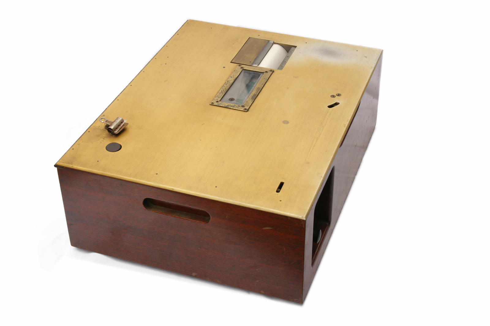
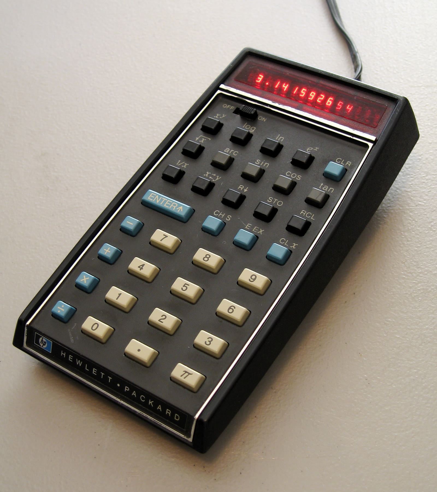

Nummer 1 · Wat is technologie eigenlijk? · tot slot
Tijdlijn
Van Edisons film in de klas tot de AI-assistent: elke golf had een belofte. Wat bleef er over, en wat zei het onderzoek?
Scroll, sleep of gebruik de pijltjes →

Edison en de film
In juli 1913 wordt Thomas Edison in een interview geciteerd met de verwachting dat film de schoolboeken zal verdringen. De precieze woorden verschillen per bron, maar de strekking is blijven hangen: het onderwijs zou binnen tien jaar volledig veranderen. Boeken zijn er nog steeds; film kwam er als hulpmiddel naast.
De Automatic Teacher
Sidney Pressey van Ohio State laat op een congres van de American Psychological Association een apparaat zien dat meerkeuzevragen stelt en de antwoorden meteen nakijkt. Hij vraagt eind jaren twintig patent aan en probeert het ongeveer tien jaar te slijten aan fabrikanten en scholen. Zonder succes.

Skinners leermachine
B.F. Skinner laat in maart op een conferentie in Pittsburgh een leermachine zien. De leerling krijgt een kleine vraag, antwoordt en weet direct of het goed is, in eigen tempo. Dat werd geprogrammeerd leren, dat in de jaren zestig in veel klassen terechtkwam.

De HP-35
Hewlett-Packard brengt de HP-35 uit, de eerste wetenschappelijke zakrekenmachine, voor 395 dollar. In het eerste jaar gaan er meer dan honderdduizend over de toonbank. Er ontstaat de zorg dat leerlingen het rekenen verleren, en daar komt in de jaren erna veel onderzoek naar.
79 onderzoeken, één beeld
Hembree en Dessart bundelen 79 onderzoeken naar rekenmachines in het onderwijs. Naast gewoon onderwijs verbeteren ze de basisvaardigheden van gemiddelde leerlingen en de houding tegenover wiskunde. Alleen in de vierde klas van de Amerikaanse basisschool lijkt blijvend gebruik de basisvaardigheden te schaden.
Oversold and Underused
Larry Cuban publiceert zijn onderzoek in klassen in Silicon Valley. Leerlingen en docenten gebruiken computers op school veel minder dan thuis, en wie ze wel gebruikt doet dat weinig creatief. Computers helpen vooral als docenten ze begrijpen, erin geloven en hun eigen lesinhoud bepalen.
Een laptop voor elk kind
Een onderzoek van de Inter-Amerikaanse Ontwikkelingsbank volgt 319 Peruaanse plattelandsscholen met laptops van One Laptop per Child. Na vijftien maanden is er 1,18 computer per leerling in plaats van 0,12. De scores voor rekenen en taal zijn niet beter. Op algemene cognitieve vaardigheden zijn enkele winsten.
Na het jaar van de MOOC
The New York Times noemde 2012 het Year of the MOOC. In 2013 start een proef op San José State University met Udacity. Volgens de verslaggeving doen de online studenten het slechter dan de studenten op de campus. In juli wordt het programma opgeschort.
Matig is beter dan veel
De OECD vergelijkt PISA-resultaten met computergebruik. Leerlingen die matig computers gebruiken, scoren beter dan wie ze zelden gebruikt, maar wie ze heel vaak gebruikt scoort duidelijk slechter. Landen die veel in ict investeerden zagen geen merkbare verbetering. Het verband is een samenhang, geen bewezen oorzaak.
ChatGPT
OpenAI brengt op 30 november ChatGPT uit. Voor het eerst kan elke leerling met een telefoon in seconden een tekst, een uitleg of een samenvatting laten schrijven. Scholen moeten ineens beslissen wat dat betekent voor huiswerk, toetsen en de vraag wat een leerling zelf moet kunnen.
UNESCO: op wiens voorwaarden?
Het wereldwijde onderwijsrapport van UNESCO concludeert dat het bewijs voor de impact van onderwijstechnologie wisselend is en dat de kosten structureel worden onderschat. Technologie mag volgens het rapport het contact met de docent nooit vervangen.
AI zonder vangrails
Een veldexperiment met bijna duizend leerlingen in het wiskundeonderwijs, gepubliceerd in PNAS, laat zien dat een AI-tutor het oefenen sterk verbetert, maar dat leerlingen zonder die hulp daarna slechter scoren. Een versie met didactische vangrails haalt dat verlies grotendeels weg.
BETT 2026
De Britse onderwijsminister noemt AI de grootste verschuiving in het leren sinds de boekdrukkunst en zegt dat technologie docenten nooit zal vervangen. In de verslagen die ik vond komen vooral leveranciers aan het woord. Onafhankelijk onderzoek is op de beursvloer schaars.